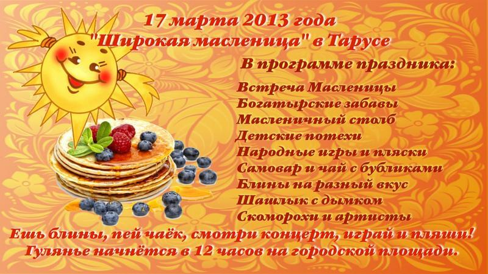

Уважаемые посетители!

Я рад приветствовать вас на сайте администрации МР "Тарусский район". Надеюсь, что вы найдете здесь интересную и полезную информацию.
Евгений Михайлович Мальцев, Глава администрации

Я рад приветствовать вас на сайте администрации МР "Тарусский район". Надеюсь, что вы найдете здесь интересную и полезную информацию.
Евгений Михайлович Мальцев, Глава администрации

24 февраля в 11:00 в спортивном комплексе “Лидер” состоялось открытое первенство Тарусского района по мини-футболу. В соревнованиях приняли участие 9 команд:
Последнее изменение:
13 марта в актовом зале администрации МР "Тарусский район" с 15:00 до 17:00 будет проводить прием председатель комиссии по жилищно-коммунальному хозяйству Законодательного Собрания Калужской области Горбатин Вячеслав Иванович.
Предлагаем Вам уникальную возможность вручить на праздничной сцене подарки покорителям Масленичного столба. Вы сможете лично пожать руку самым смелым, ловким и сильным людям. Не сомневаемся, что подарок именно Вашего предприятия станет лучшим. Яркую рекламу гарантируем.
Информацию можно получить по телефонам:
В рамках оптимизации процесса обслуживания абонентов по Калужскому филиалу ОАО «Ростелеком» с 1 марта 2013 года будет закрыт Центр продаж и обслуживания клиентов в г. Тарусе Калужского филиала ОАО «Ростелеком». В связи с этим будет изменена схема обслуживания пользователей услуг электросвязи, проживающих в г. Тарусе и Тарусском районе.
Прием платежей за услуги Калужского филиала «Ростелеком» от абонентов г. Тарусы и Тарусского района, предоставление услуг связи за наличный расчет (внутризоновая, междугородная, международная связь, услуги телеграфной связи), продажи карт ЕТК, ЕКС, и УУС будут осуществляться в отделениях почтовой связи Тарусского района согласно действующему договору о взаимодействии между ОАО «Ростелеком» и ФГУП «Почта России».
Также оплатить услуги, предоставляемые Калужским филиалом «Ростелеком» возможно в отделении Сберегательного Банка РФ; через платежные терминалы QIWI и другие платежные системы. Более подробная информация доступна по адресу: www.rt.ru. Для оплаты услуг Интернет достаточно знать номер лицевого счета, для оплаты услуг телефонной сети – номер телефона.
Прием заявлений на предоставление услуг Калужского филиала ОАО «Ростелеком», консультации по оказываемым услугам и сервисам круглосуточно осуществляются по единому бесплатному номеру 8-800-450-0-450.
Необходимую информацию по состоянию лицевого счета, техническую поддержку по услугам Интернет можно получить, позвонив по номеру 150 или 8-800-450-0-150. Для заявок в бюро ремонта, по услугам телефонии следует обращаться по номеру 125. Передача телеграмм осуществляется по номеру 126.
Для решения оперативных вопросов, в т.ч. и с абонентами, в г. Таруса назначен Административный директор Грицинин Виталий Владимирович, контактный телефон 8-(484-35)-2-14-00, мобильный 8-910-914-06-89.
Информация о деятельности компании ОАО «Ростелеком» размещена в сети Интернет по адресу: www.center.rt.ru. Информация Калужского филиала ОАО «Ростелеком» доступна на сайте – www.kaluga.ru.
Калужская региональная комиссия по организации подготовки управленческих кадров для организаций народного хозяйства Российской Федерации информирует о начале работы по набору слушателей, направляемых на профессиональную переподготовку по направлениям «Менеджмент», «Менеджмент: управление персоналом», «Маркетинг» в соответствии с Государственным планом подготовки управленческих кадров для организаций народного хозяйства Российской Федерации в 2013/2014 учебном году.
Документы принимаются ГКУ «Калужский региональный ресурсный центр Президентской программы подготовки управленческих кадров» (далее – Калужский РРЦ) от руководителей высшего и среднего звена промышленных и сельскохозяйственных предприятий всех форм собственности, предприятий сферы ЖКХ, медицинских организаций, организаций сферы образования, культуры и спорта, представителей субъектов малого и среднего бизнеса, отвечающих следующим требованиям:
Конкурсный отбор осуществляется на основе конкурсных испытаний четырех видов:
Документы принимаются Калужским РРЦ по адресу: г. Калуга, ул. Ленина, 74 (Народный дом), офис 27.
Телефоны для справок: 8 (4842) 22-45-36, 22-58-05, 22-58-06, e-mail: rrckaluga@mail.ru.
По всем возникающим вопросам также можно обратиться в администрацию МР «Тарусский район» к заместителю начальника отдела социально-экономического развития и муниципального хозяйства Озорниной Гелене Анатольевне, тел. 8 (484-35) 2-51-08.